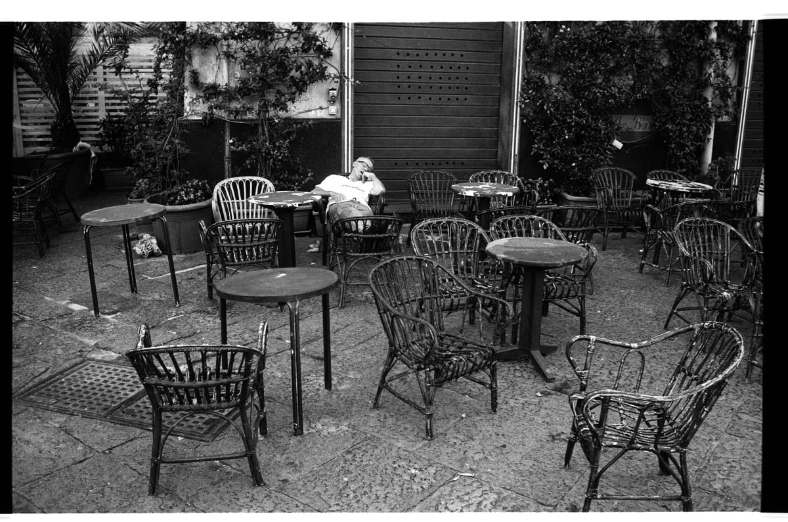

Я с утра сегодня зачем-то собрал диван. Сейчас пришел и думаю: ну вот зачем — знал ведь, что приду поздно и сразу лягу спать. А теперь пришел — и снова его разбирай. Повел себя как-то совершенно механически.
А на фото мужик спит, ничего не разбирая, прямо посреди Неаполя.